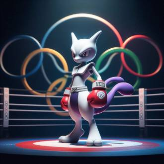
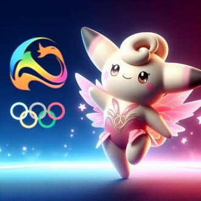
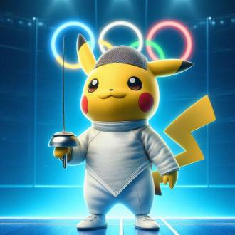
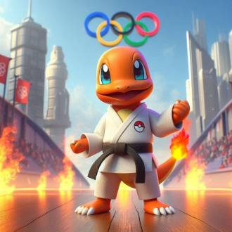
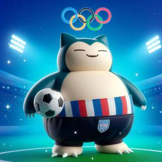

-
Mewtwo
Descrição
Mewtwo, o poderoso pokémon de tipo Psíquico, está participando das Olimpíadas Pokémon 2014, atleta da modalidade de boxe. Ao entrar no ringue, Mewtwo exala uma aura de intimidação e confiança. Sua figura imponente e olhos brilhantes refletem uma determinação inabalável. Treinado intensamente, Mewtwo aperfeiçoou seus golpes, que são não apenas rápidos e precisos, mas também devastadoramente poderosos. Cada soco lançado por ele é carregado com força bruta e precisão calculada, demonstrando a perfeita fusão entre habilidade física e controle mental.
-
Clefairy
Descrição
Clefairy é bastante conhecida por deslumbrar a todos nas suas apresentações de ginástica artística. Com por sua aparência fofa e natureza graciosa, Clefairy traz uma combinação perfeita de elegância e habilidade técnica para o ginásio, encantando o público e os juízes com suas performances impecáveis.
-
Pikachu
Descrição
Pikachu é mais um atleta que estará nas Olimpíadas Pokémon 2014, demonstrando sua habilidade única na modalidade de esgrima. Equipado com uma pequena e brilhante espada, Pikachu mostra uma destreza impressionante, combinando movimentos rápidos e precisos para marcar pontos contra seus oponentes. Seus reflexos elétricos permitem-lhe esquivar-se com graça e atacar com precisão milimétrica. A eletricidade que flui por seu corpo adiciona um elemento de surpresa e intensidade a cada duelo, eletrizando a atmosfera e encantando o público.
-
Charmander
Descrição
Charmander por ser um pokemon muito determinado e com espírito competitivo,se destaca na modalidade de judô. Com seu corpo ágil e forte, Charmander utiliza técnicas precisas e estratégicas para dominar seus oponentes no tatame. Sua cauda flamejante, símbolo de sua força vital e energia, arde intensamente enquanto ele realiza seus movimentos de ataque e defesa com precisão.
-
Snorlax
Descrição
Conhecido por seu tamanho massivo e natureza tranquila, Snorlax se revela um goleiro formidável, combinando sua grande presença física com reflexos surpreendentes e uma defesa quase impenetrável. Quando Snorlax entra em campo, sua figura imponente imediatamente intimida os atacantes adversários. Com sua enorme estrutura bloqueando grande parte do gol, Snorlax transforma a tarefa de marcar gols contra ele em um verdadeiro desafio.